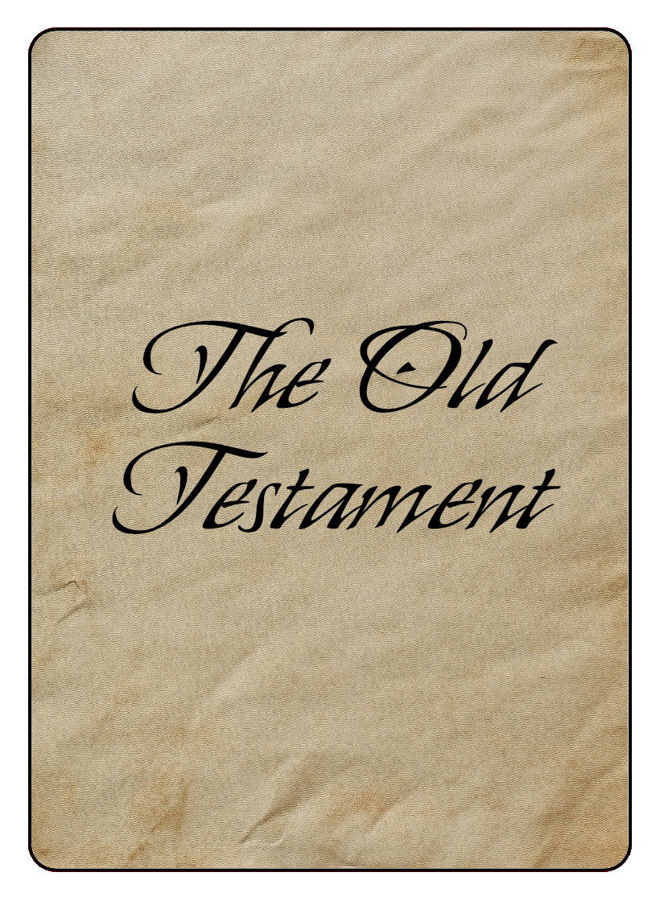
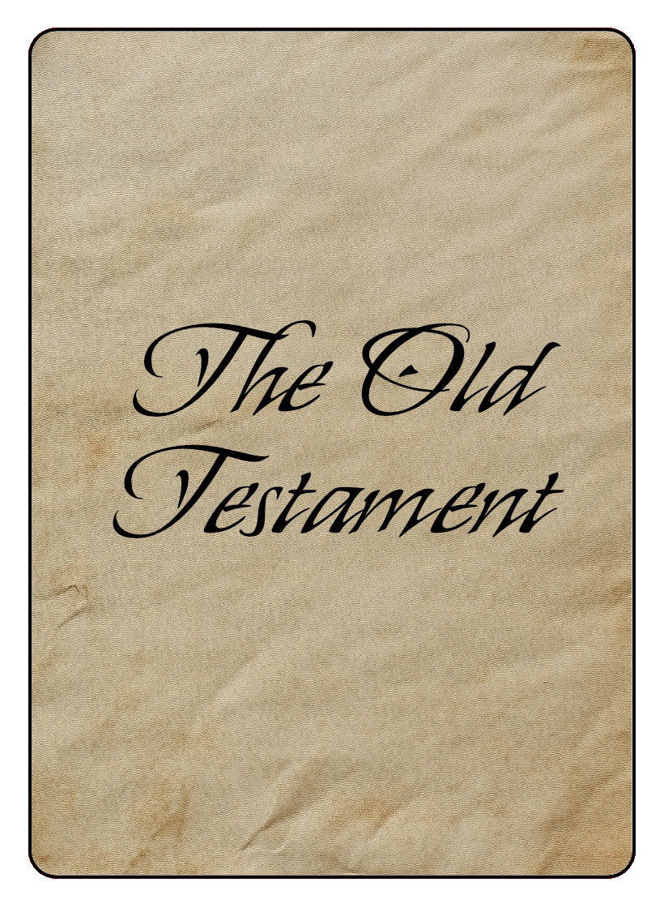

Tyndale is a hidden movement game. One player is on the run, trying to complete translation, printing, and shipping of the Bible while the other players try to track him down based on clues Tyndale leaves behind.
William Tyndale has fled England to Europe with the mission of translating the Bible from the original Hebrew and Greek into English. The Bishop of London is determined to stop him. Tyndale will need to move around Europe to avoid capture. As he completes translation of portions of scripture, he must visit a new Printing Centre to get each one printed, and then get the printed copies to a Coastal City for shipment to England.
At the beginning of the game, Tyndale has completed translation of the New Testament. He needs to get it to a Printing Centre to get it published and then to a Coastal City, so that he can ship it and begin working on translating the Pentatuch. At each city that he visits, he will “leave behind” copies of his most recently published translation (if any). These will be clues for those chasing or helping him. Once a published translation reaches a Coastal City, it independently (in the hands of trusted merchants) begins the journey across the English Channel or North Sea and then the English countryside towards London.
The game may be played by two to six players and typically takes 30 to 90 minutes to play.
Gameboard
- The gameboard represents a map of England and Europe.
- The map is overlaid with a grid.
- The vertical grid lines are labeled A-K and the horizontal gird lines are labeled 1-11.
- On land, the intersections of the grid lines are cities and towns. On water, the intersecting locations are also legal moves (by boat), but aren't labeled.
- Printing Centres are cities marked by a large circle and labeled with the city name.
- Coastal Cities are cities or towns that are one step away from a water location.
- Cities and towns loyal to the Pope are colored Red.
- Cities and towns sympathetic to the Reformation are colored Blue.
Pawns

- There will be 4 or 5 pawns moving from location to location on the Gameboard.
- These pawns represent the Bishop’s Agents who are searching for Tyndale. (Although one might be a Secret Supporter who is actually helping him.)
- Pawns move vertically and horizontally along the grid lines on the Gameboard.
Die
The game uses a 6 sided die with values 1, 2, and 3.
Scorecard
- Each player gets a Scorecard.
- Each Scorecard shows a simplified representation of the Gameboard.
- Tyndale uses his Scorecard to record where he has left copies of his Publications.
- Bishop’s Agents use their Scorecards to record clues they find as they search for Tyndale.
- The small numbers next to Coastal Cities indicate their distance from London.
Cards
There are four types of cards used in the game.
Tyndale Card
The player playing as William Tyndale gets this card.


Bishop's Agents Cards
If there are 5 or 6 players, each of the Bishop's Agent players will blindly draw a card to find out whether or not they are the Secret Supporter of Tyndale.


Tyndale Location Cards
When asked, Tyndale uses these cards to let the other players know whether or not he is in their location.


Tyndale's Bible Cards
When asked, Tyndale uses these cards to let the other players know whether or not he has left any translations in their location.


 

The meaningful events in the game are:
- The translation of scripture.
- The publication of a translation.
- The shipment of a publication.
- The arrival of a shipment in London.
- The capture of William Tyndale.
The portions of scripture translated, published, and shipped are:
- The New Testament (N)
- The Pentateuch (P): Genesis, Exodus, Leviticus, Numbers, Deuteronomy
- The Historical Books (H): Joshua, Judges, Ruth, 1 & 2 Samuel, 1 & 2 Kings, and 1 & 2 Chronicles
- The Entire Old Testament (O)
The game ends either when:
- William Tyndale is captured (the Bishop's Agents win), or
- The Old Testament reaches London (Tyndale and his Secret Supporter win).
Game Setup
- Each Player takes a Scorecard.
- One player will be William Tyndale. He does not have a pawn because his moves are secret.
- There will always be at least 4 Bishop's Agents (pawns) searching for Tyndale.
- If there are 5 or 6 players, the players searching for Tyndale each blindly draw a card from the Bishop's Agent cards.
- There is one "Secret Supporter" card - if a player draws this card, that player will secretly try to help Tyndale. This player can withhold information from others.
- Each player secretly shows their card to the Tyndale player so that he knows who (if anyone) is on his side.
- If there are fewer than 5 players, there will be 4 pawns and one or more players will control more than one pawn.
- If there are 5 players, there will be 4 pawns, one per non-Tyndale player.
- If there are 6 players, there will be 5 pawns.
- Players choose their pawns and place them on any location on the board (no more than one pawn per location).
- After the Bishop's Agents have placed their pawns (and shown their cards to Tyndale if appropriate), Tyndale chooses any location as his starting point. If he chooses a Printing Centre, he publishes the New Testament in that city and writes an "N" in the corresponding circle on his Scoresheet.
Players take turns, starting with Tyndale, and going in clockwise order. If a player is controlling more than one pawn, that player moves each pawn in turn before play advances to the next player.
Tyndale's Turn
If you are Tyndale, on your turn:
- Decide your next move. You can move horizontally or vertically to an adjacent spot on the map. If that spot is blue, you can move a second time to an adjacent spot. You can pass through, but not finish on a spot occupied by a Bishop's Agent.
- Write the letter representing the most recent publication (N, P, H, or O) in the circle on your Scorecard associated with each of your moves. If you've previously visited this location with a different publication, replace the previous letter with the most recent publication letter.
- If the spot where you finish is a Coastal City and you have a publication that has not yet shipped, then send that shipment on its journey. Find the small number near the city on the Scorecard indicating the number of moves it will take for the shipment to reach London and circle that number next to the appropriate letter in the table at the top of your Scorecard. If it will take more than 10 moves, instead of a number you will find a "+" and will circle "11+". Once you have shipped a publication, you immediately complete the next translation. Your next goal is to take this new translation to a Printing Centre you have not previously visited to get it published.
- If the spot where you finish is a Printing Centre that you have not previously visited and you have a translation that has not yet been published, then you get it published in this city. Your next goal is to take this publication to a Coastal City to ship it to London.
- If you have any shipments that have not yet arrived in London, cross off the next number (starting with 1) in the row for that publication. When you cross off the circled number, announce to all players which shipment has now arrived in London. If the Old Testament arrives in London, the game is over and Tyndale (and the Secret Supporter) has won.
Example
- Tyndale starts in Antwerp (E5) where he publishes and ships the New Testament. He writes an "N" in the circle at E5 and circles the number "3" in the "N" row in the table in the top left of the scorecard.
- On his first turn he moves to Cologne (F5) where he publishes the Pentateuch. He writes a "P" in the circle at F5 and crosses off the "1" in the "N" row of the table.
- On his second turn he moves to F4 where he ships the Pentateuch. He writes a "P" in the circle at F4, circles the "5" in the "P" row of the table, and crosses off the "2" in the "N" row.
- His third turn he moves to H4. He writes a "P" in the circles at G4 and H4, crosses off the "3" in the "N" row and the "1" in the "P" row of the table and announces that the New Testament has arrived in London.
During this third round, two of the Bishop's Agents receive clues from Tyndale.
One moves to E6 and receives:
Another moves to G4 and receives:
Bishop's Agent's Turn
For all other players, on your turn:
- Roll the die to determine how many spaces to move.
- Move your pawn the number of spaces indicated by the die. You may pass through, but not finish on a space populated by another Bishop's Agent.
- You may ask Tyndale if there's anything in the final location where you land. He will hand you two cards. Tyndale cannot lie.
- One card indicates whether or not he is in that location. For Bishop's Agents, this will simply say whether or not he is there, but for the Secret Supporter, the card might say that he is "near" or "far". If you are not the Secret Supporter and you have landed on Tyndale's location, announce that you have captured "that notorious heretic Tyndale." The Bishop's Agents have won the game.
- The second card indicates whether or not there are any publications in that city, or if there are "rumors of a translation" - meaning an adjacent (horizontal or vertical) space has a publication. You can mark what you learned in the corresponding circle on your Scorecard. You can also share this information with other players. If there is nothing in that city, the appropriate response is "Nothing to Report".
Note that Tyndale only leaves copies of his publications (clues) where he personally travels. (When he travels by boat on water spaces, he leaves publications with fishermen he encounters at each water location.) But once he ships a publication, there will NOT be any clues along the route that the publication is traveling on its way to London.
Example

- You start in Prague (K6).
- On your first turn, you roll a "3" and move to Nuremburg (I7).
- You ask Tyndale what's there. He gives you the two cards shown below. You place an "X" in the I7 circle.
- On your second turn, you roll a "2" and move to Strasburg (G7).
- You again ask Tyndale and he gives you the same two cards. you place an "X" in G7.
- On your third turn, you roll a "3" and move to E6.
- You again ask Tyndale and this time he gives you the two cards shown below. You place an "R" in E6.
Each turn, your fellow Bishop's Agents are also sharing the information that they have received and you also mark that information on your scorecard.
Special considerations for the Secret Supporter
If you are the Secret Supporter, you may have the opportunity to help Tyndale escape persecution and get the English Bible to the English people. There are two ways that you can help, if you feel so led.
The first way is by carrying a published translation to the coast for shipping. If Tyndale tells you that there is a publication in a city that you visit that hasn't yet arrived in London, by next visiting a Coastal City, you will be carrying that publication with you. If Tyndale hasn't yet shipped that publication (only he knows), he will track your movements and appropriately record the shipment when you reach the Coastal City.
The second way you can help is by NOT helping the Bishop's Agents. Lying and deceit are an abomination to God and a violation of the ninth commandment. However, the fifth commandment ("thou shalt not murder") includes the positive requirement of preserving human life. Sharing everything you know with the Bishop's Agents may lead to Tyndale's capture and unjust execution.
While Bishop's Agents are allowed to share information with each other, they aren't required to. If the cards shown by Tyndale indicate that there are no translations at a location and he is not there, the appropriate response to other players is "Nothing to Report". Tyndale's Secret Supporter may also choose not to report it if she finds rumors, translations, or Tyndale himself. A simple "Nothing to Report" will both protect Tyndale and avoid sinning.
Exposing the Secret Supporter
While playing the game, Bishop's Agents may begin to suspect that one of their own is actually a Secret Supporter of Tyndale's efforts.
Any Bishop's Agent may accuse another of being a Secret Supporter, but only immediately following the announcement of the arrival of a publication in London. All Bishop's Agents players will vote on whether or not to formally charge the accused. A majority vote results in charges.
If charged, the accused player must show their Bishop's Agent card to reveal whether or not they are the Secret Supporter.
If they are the Secret Supporter, then they are out of the game. Their pawn is removed from the board and they can no longer take turns. If they were carrying a publication for Tyndale, that is lost and Tyndale must find another way to get the publication to a Coastal City for shipment.
If they are not the Secret Supporter, then the one making the false accusation is out of the game. Their pawn is removed fro the board and they can no longer take turns.
In the days of William Tyndale, Roman Catholic Church officials were very much focused on earning salvation through their meritorious service to the church. Therefore, it seems appropriate to introduce a competitive element to this largely cooperative game.
In this variant, called Meritocracy, Bishop's Agents earn points for each of a number of accomplishments in the search for Tyndale:
- 10 points: Being the first to find a particular translation in a city.
- 20 points: Finding (and burning) where a particular translation was printed.
- 20 points: Finding where a particular translation shipped for England.
- 50 points: Successfully uncovering the Secret Supporter.
To implement these additional game features:
- If you are the first to uncover a particular translation (New Testament, Pentateuch, Historical Books, or Old Testament) in a city, then announce that you have found it, mark your scorecard as normal, but also circle the city.
- If you believe that you have found the city where a translation was printed (whether or not that is true is irrelevant), announce that you have found where that translation was printed, mark your scorecard as normal, but also circle the city.
- If you believe that you have found the city from which a translation was shipped to England (whether or not that is true is irrelevant), announce that you have found where that translation was shipped, mark your scorecard as normal, but also circle the city.
- If you accuse the Secret Supporter, gain support of your fellow players to bring charges, and successfully uncover the Secret Supporter, draw a star in the top right of your scorecard.
- At the end of the game, add up your points.
- You get 30 points if you have a star in the top right of your scorecard.
- You get 20 points for each circled printing centre.
- You get 20 points for each circled coastal city.
- You get 10 points for each additional circled city.
- If Tyndale is caught before the Old Testament reaches London, then the player with the most points wins.
William Tyndale is a mystery. He lived much of his life in hiding, so there were no portraits ever made of him during his lifetime. There is no contemporary biography that gives specific details of his life. We can infer some things about him from public university records, public records that seem to be about his brothers, public land records, and some writings about him by his contemporaries, many of whom hated him and wanted him dead. So, whatever you hear about William Tyndale, you need to realize that it’s probably someone’s best guess, and not a for-certain fact. That includes what you are about to read.
William Tyndale was born sometime around 1494, give or take a few years. He was almost certainly from somewhere in Gloucestershire, probably near the border of Wales, so about 100 miles or so west of London, and about 50 miles west of Oxford.
Some think the name Tynedale refers to the family originally being from the Dales (or hills) along the Tyne river, in Northern England. The family may have had to relocate when they ended up on the wrong side of one of England’s earlier civil wars.
But his family were landowners of some level of wealth. Williams’ older brother shows up in public records as being fairly prominent in the area. His younger brother would later get into some trouble for supporting William’s efforts to bring the Word of God into England.
As the middle son, William wasn’t going to inherit his father’s land, so he was a good candidate for the ministry. He was sent to Oxford, entering the university probably when he was 13 or 14 years old. He earned his Bachelor of Arts degree in 1512 and his Master of Arts degree in Philosophy in 1515. Although the universities were basically under church control, there was no theology taught until the Masters level and even then the focus was more on logic and wordcraft than on meaning and spirituality.
Tyndale later wrote: “In the universities they have ordained that no man shall look on the scripture until he be trained in heathen learning eight or nine years, and armed with false principles, with which he is clean shut out of the understanding of scripture: and at this first coming unto the university he is sworn that he shall not defame the university, whatsoever he seeth; and when he first taketh first degree, he is sworn that he shall hold no opinion condemned by the church, but what such opinions be, that he shall know, and then, when they be admitted to study divinity, because the scripture is locked up with such false expositions and with false principles of natural philosophy, that they cannot enter in, they go about the outside, and dispute all their lives about words and vain opinions, pertaining as much unto the healing of a man’s heel as the health of his soul; provided yet always, lest God give his singular grace unto any person, that none may preach except he be admitted of the bishops.”
After graduating, Tyndale was required to teach a year at Oxford. He also was ordained as a priest at some point. But it seems that, as soon as he could, he left Oxford for Cambridge. Tyndale was gifted in languages and he may have gone there to study Greek.
Cambridge was founded in the 13th century by some professors who had fled a local dispute in Oxford. Oxford traces its history to the 11th or 12th century. Many of the leaders of the yet future English Reformation would come out of Cambridge. Oxford was where many of the reformation’s staunchest foes were trained, men that would become Tyndale’s mortal enemies. When Bloody Mary reintroduced Catholicism to England, many of the Cambridge-trained reformers were burned in Oxford. There’s a monument to them today in Oxford.
Tyndale would’ve arrived in Cambridge around 1517. When Luther’s writings started arriving from the continent, there was a group of reform minded men who would meet at the White Horse Inn in Cambridge to discuss these writings. It is possible that Tyndale was among them. It seems that Tyndale was at least beginning to question the Catholic Church’s ways by the time he left Cambridge in 1521.
He left to return to Gloucestershire where he served as tutor for the family of Sir John Walsh at Little Sodbury Manor.
While in Gloucestershire, Tyndale was not quiet about his seemingly radical thoughts. In addition to his duties teaching the children, he would also preach at times in nearby villages. At some point he was summoned by the vicar general of the diocese, John Bell, to a gathering of clergy in Gloucestershire. Bell accused Tyndale of spreading seditious and heretical teaching. Writing about it later Tyndale said that Bell “threatened me grievously, and reviled me, and berated me as though I had been a dog” - but he was released with only a reprimand.
Various members of the clergy would often come to be fed at the Walsh table at Little Sodbury, and Tyndale would be at the table with them, debating about church doctrine, and especially about the authority of Scripture. In a famous confrontation, one of these guests said to Tyndale “We were better to be without God’s law than the Pope’s.” - meaning that he would rather have the church’s traditions than the Bible.
Tyndale responded “I defy the Pope and all his laws, and if God spare my life ere many years, I will cause a boy that driveth the plow, shall know more of the scripture than thou dost.”
This seems to be the moment that focused William Tyndale on his life’s work - translating the Bible from the original languages into English.
Unfortunately, that was against the law. In response to John Wycliffe’s previous translation of the Latin Vulgate Bible into English, the Archbishop of Canterbury had put in place, in 1408, the Constitutions of Oxford, which forbade anyone from translating scripture into English without the express permission of the Bishops. It even forbade the people from reading the Bible in English.
So in 1523 William Tyndale went to London to ask the Bishop of London to sponsor him in doing just that. The Bishop at the time was Cuthbert Tunstall, a friend of Desiderius Erasmus who had actually traveled with Erasmus to Brussels, Ghent, and Bruge and helped him with his Greek New Testament project.
Erasmus spent several years in England as a professor at Cambridge. He never learned English, but had no problem operating in the academic world entirely in Latin. Some of the men who became powerful leaders in England had strong ties to Erasmus. In 1516, Erasmus published a new Latin translation of the New Testament based on the best Greek manuscripts. His book laid the Greek alongside the Latin and it became a very helpful tool to those creating new translations of the Bible. Martin Luther used it to translate the New Testament into German in 1522. Erasmus was a proponent of translating the Bible into the common language in each country, but the church was opposed to any translations other than Latin.
Tyndale hoped that the Bishop would agree with Erasmus’ positive views on Bible translation and would take Tyndale into his employment to create an authorized English Bible. Unfortunately, Luther’s German New Testament had recently been published and Luther’s writings seemed to be fueling the Peasant’s Revolt in Germany.
Tyndale translated a particularly challenging ancient Greek document and had it delivered to the Bishop via Sir Harry Guilford, a friend of Sir John Walsh. This was meant to demonstrate to the Bishop his translation skills. But when Tyndale met with Cuthbert, Cuthbert indicated that he couldn’t afford to take him on, but he encouraged him to find another sponsor in London. In reality, it seems that Cuthbert exerted pressure on everyone who could possibly help Tyndale to not support him in any way. Cuthbert wanted Tyndale close, so he could keep his eye on him, but didn’t want to give him any chance to succeed.
Tyndale ended up staying with Humphrey Monmouth, a wealthy London cloth merchant. He stayed in London for a year, still hoping to find a sponsor for his translation project. He preached a little, and he likely worked on his translation of the New Testament. He also became aware of a secret society called the Christian Brethren, an association of wealthy cloth merchants who financed and smuggled in forbidden books and pamphlets supporting the reformation. The brethren financed Tyndale's work in the beginning and later helped bring his books into England.
Once Tyndale realized that he would never find support for his translation work in England, he left for Europe. He probably went to Germany, but for the next dozen years he would constantly be on the run, trying to avoid capture.
Tyndale had mastered Greek, but there were no Hebrew experts in England. It appears that he may have made his way to Luther’s Wittenberg and studied Hebrew there. There is a cryptic entry in the registrar's records at the University in Wittenberg around that time for an Englishman named William Dalton. If you reverse the two syllables in Tyndale, you get Dal-Tyne.
From this point on, Tyndale is best known for his writings, especially his translation of the Bible from the original languages into English.
The first part of the Bible that William translated was the New Testament. He found a printer in Cologne, Germany who would print it for him. In those days, printing a book was a very hard and slow process. Each page had to be printed separately using a hand-operated printing press. Unfortunately, in the middle of printing, someone from the Catholic church discovered what was happening and called for the authorities to arrest William and capture the translation. William found out and he and his assistant fled to a safer place with the translation. In 1526, the New Testament was finally printed in Worms, Germany and secretly shipped to England for the people to read.
The next part of the Bible that William translated was the first 5 books of the Old Testament: Genesis, Exodus, Leviticus, Numbers, and Deuteronomy. This collection of books is also called the Books of Moses, the Law, or the Pentateuch (which is Greek for “five books”). William had to learn Hebrew to be able to do this translation, so it was very hard. After he translated these first five books, he took a ship to a city where he hoped to get it printed. Unfortunately, the ship sank. William and his assistant survived, but the translation sank to the bottom of the sea. William had to start over. Finally, in 1530, the Pentateuch was published in Antwerp, Belgium and shipped to England.
The next portion of scripture that William translated is most of what we often call the Historical Books. These were the books of Joshua, Judges, Ruth, 1 Samuel, 2 Samuel, 1 Kings, 2 Kings, 1 Chronicles, and 2 Chronicles. These were printed in Antwerp in 1531 and secretly shipped to England for all to read.
That year he also published the translation of the book of Jonah.
In 1534, Tyndale published a revised version of the New Testament with a large number of corrections. For example, he had originally replaced the word “priest” from the Latin Vulgate with the word “Senior.” In the 1534 edition, he changed this to “Elder”.
It was the New Testament of 1526 that really aroused the furor of the church leadership in London. Until Tyndale’s English translation started showing up in England, the idea of the Bible in English was just a theory. Wycliffe’s translation from centuries before was so hard to read that it didn’t really do much for the average Englishman, but Tyndale’s translation was beautiful and powerful. It immediately became a best seller and everyday people were reading it. It was affordable enough for day laborers to buy and small enough to be easily concealed.
The Bishops immediately attacked it, claiming it had thousands of errors and couldn’t be trusted. They collected as many copies of the book as they could, even buying them at a premium price, and then they burned them. This helped fund Tyndale's continuing work and made people even more interested in reading the Bible. It also made people question even more the validity of church leaders who would burn the very Word of God.
It also sparked a written war over theology. Thomas More specifically attacked three of Tyndale’s word choices. Where the Catholic Church had translated Ekklesia to be the Latin word for Church, Tyndale translated it as Congregation, since Rome had turned “Church” into an overbearing institution, while Tyndale thought the Bible focused on the gathered body of believers who make up the church. The Catholics had translated the New Testament Greek Presbuteros as the Latin word for the same word used for Priest in the Old Testament. Tyndale saw New Covenant ministers playing a very different role. He initially translated this word “Senior”, but as mentioned above, in his 1534 revision he changed it to “Elder”. Finally, the Catholic Bible had translated the Greek word Agape as “charity” but Tyndale translated it as “love”. Tyndale defended these word choices in his response to More. That opened the door for debates on other topics.
The King of England during this time was King Henry VIII. Henry wanted a male heir. His first wife, Catherine, was getting beyond child bearing age and had only given him a daughter. Henry wanted the marriage annulled, but the Pope wouldn’t allow it. Eventually this led to England’s separation from the Catholic church and Henry declaring himself the head of the English church, but this battle took several years. Henry’s first request to the Pope to annul his marriage with Catherine was in 1527 and the split with Rome happened in 1533. This was exactly the time when Tyndale was writing.
Tyndale wrote a book called The Obedience of a Christian Man that included this line that Henry really liked: “God hath made the king in every realm judge over all, and over him there is no judge. He that judgeth the king judgeth God and he that layeth hands on the king layeth hands on God, and he that resisteth the king resisteth God and damneth God’s law and ordinance.”
Tyndale thought it was the English church leaders pushing Henry to seek an annulment, not Henry’s own selfish desires, so he wrote The Practice of Prelates, ultimately providing a Biblical argument against the divorce. Henry was very much not a fan of this one and fired up the clergy even more to fight against and find Tyndale.
One of Thomas More’s books, titled Confutation of Tyndale’s Answer was half a million words long, more than two Moby Dick’s or a single War and Peace. There wasn’t much More could say to defend the Roman church’s errors in light of what the Bible said, so instead he made personal attacks against Tyndale and repeated himself. A lot. Here’s one small quote “Judge good Christian reader whether it be possible that he [Tyndale] be any better than a beast out of whose brutish beastly mouth cometh such a filthy foam.”
Tyndale published three types of books.
Of course, the most important are his translations of Scripture. Sometimes the publication just included the scripture. Other times it included some commentary and explanation. He published the entire New Testament and the Old Testament through 2 Chronicles, plus the prophet Jonah. After his death, a couple of the men that had assisted him completed the Old Testament, but not from the original languages.
He also published expositions of scripture including The Parable of the Wicked Mammon (or the Parable of the Unjust Steward from Luke 16), an Exposition of the First Epistle of John, and an Exposition of Matthew 5 - 7 (the Sermon on the Mount).
The third type of publication dealt with theological topics. To some extent, his expositions did as well. The Parable of the Wicked Mammon made a strong case for justification by faith alone. I’ve already mentioned The Obedience of a Christian Man and The Practice of Prelates. His An Answer to Sir Thomas More covered many topics. His book on The Lord’s Supper attacked the beliefs and practices of the Catholic church on that topic. And his A Pathway Into Holy Scripture explains the importance of the distinction between law and gospel.
In 1535, things seemed to be going well. King Henry VIII had finally broken from the Roman Church, even though it was for all the wrong reasons and not a very theologically correct reformation, but he had counselors around him guiding things in the right direction. Many church leaders remained faithful to the Catholic Church and refused to recognize Henry as head of the church. They were imprisoned and many executed. More was imprisoned in the Tower of London and eventually would be beheaded.
Maybe Tyndale let his guard down.
He met an Englishman, the son of a member of Parliament and an Oxford graduate. He was charismatic and good at bluffing. His name was Henry Phillips. What Tyndale didn’t know was that Henry had amassed huge gambling debts.
We don’t know who hired Phillips. It might have been More, even from his prison cell. Or perhaps it was the current Bishop of London John Stokesley. Both More and Stokesley had been very active in persecuting what they called heretics, those who held to Biblical views. More would keep heretics bound in his garden for whipping at his convenience and Stokesley bragged on his deathbed of ordering the execution of 30 heretics during his life.
Whoever it was, it appears that Phillips was offered a lot of money to not only capture Tyndale but to see him executed. Phillips led Tyndale into a trap in Antwerp, Belgium. He was imprisoned in a dark, cold, and wet dungeon at Vilvoorde Castle, also in Belgium. After more than a year, he was brutally executed.
His final prayer was for God to open the King of England’s eyes to the need of his people for a Bible in their own language.
Amazingly, that prayer was answered just a few years later. King Henry VIII ordered that a Bible in English be provided to each church in England and used in church services. Miles Coverdale, who had helped Tyndale, was commissioned to produce it and most of The Great Bible, as it became known, was Tyndale’s translation. Tyndale's translation also made up a large part of the King James Bible in 1611 and most English translations since that time use many of the turns of phrase that William Tyndale originated.
Tyndale is not currently available for purchase.